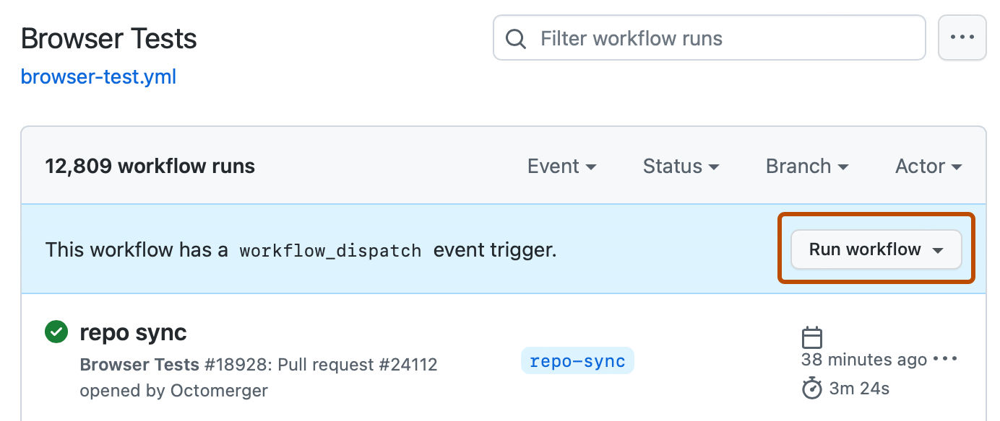

Automate a Python Data Pipeline with GitHub Actions
Introduction: let a script do its job on a schedule
Suppose you want a new row of data every day. You could remember to run a script each morning, but sooner or later you’ll forget. You could leave your laptop on, but then the job stops when the laptop sleeps. GitHub Actions gives your repository a small, temporary computer that can run the script for you.
In this tutorial, we’ll build the idea step by step: tell GitHub when to start, show it what to run, and save the result before its computer goes away. Our example is Archidekt Snapshot, which tracks decks in a public Archidekt folder. You don’t need to know anything about Magic: The Gathering; the same pattern works for many Python scripts that produce data files.
1. Two parts: the script and the instructions
Think of the Python script as the worker and the Actions workflow as its instruction sheet. The worker, track_prices.py, fetches deck and price data from Archidekt and writes CSV files under data/. The workflow, .github/workflows/daily-prices.yml, tells GitHub when to start that worker and what to do with its files.
The script needs to know which Archidekt folder to read. It gets the folder number from an environment variable: a setting supplied when the script starts. In this workflow, the setting is named ARCHIDEKT_FOLDER_ID.
The script writes daily totals to data/totals.csv. If it runs twice in one day, the second run replaces that day’s rows instead of adding duplicates.
2. Tell GitHub when and what to run
An Actions workflow is a YAML file: a list of instructions with indentation showing which instructions belong together. Each run starts on a runner, GitHub’s temporary computer. The example’s main steps are:
on:
schedule:
- cron: "17 13 * * *"
- cron: "47 16 * * *"
- cron: "23 21 * * *"
workflow_dispatch:
push:
branches: [main]
paths: [track_prices.py, .github/workflows/daily-prices.yml]
jobs:
snapshot:
runs-on: ubuntu-24.04
steps:
- uses: actions/checkout@v5
- uses: actions/setup-python@v6
with:
python-version: "3.12"
- run: pip install -r requirements.txt
- run: python track_prices.py
env:
ARCHIDEKT_FOLDER_ID: ${{ vars.ARCHIDEKT_FOLDER_ID }}Read the top as the when and the bottom as the what:
schedulestarts the job at set times. Thecrontext describes those times.workflow_dispatchadds a button so you can start a run yourself.pushstarts a new snapshot when the script or workflow changes onmain.checkoutputs a copy of your repository on the runner. The next steps install Python 3.12 and the packages listed inrequirements.txt.runstarts the script. Theenvsetting gives it the folder number it needs. AddARCHIDEKT_FOLDER_IDin Settings > Secrets and variables > Actions > Variables.
What does the schedule mean?
The cron expression has five fields: minute, hour, day of the month, month, and day of the week. In 17 13 * * *, the first two values mean “minute 17 of hour 13”; the stars mean “every day, every month, every weekday.” This workflow uses UTC, which stays fixed when Mountain Time changes for daylight saving.
| Cron | UTC | Mountain in summer | Mountain in winter | Purpose |
|---|---|---|---|---|
17 13 * * * |
13:17 | 7:17 a.m. | 6:17 a.m. | Main run |
47 16 * * * |
16:47 | 10:47 a.m. | 9:47 a.m. | Backup |
23 21 * * * |
21:23 | 3:23 p.m. | 2:23 p.m. | Backup |
Why three times? GitHub can delay a scheduled run when Actions is busy or occasionally miss one. Each backup checks whether today’s snapshot is already in totals.csv; it exits if so, and collects data if not. A schedule means “try around this time,” not “run exactly on time.”
You can set a schedule’s time zone with an IANA name. This example runs at 7:00 a.m. Mountain time, including the daylight saving change:
schedule:
- cron: "0 7 * * *"
timezone: "America/Denver"See GitHub’s schedule documentation for details.
3. Keep the result after the runner goes away
The runner is temporary: when the job finishes, GitHub throws that computer away. The files the script created would disappear too unless the workflow saves them back to the repository. To let the workflow push a commit, give its built-in token permission to write repository contents:
permissions:
contents: writeThen the workflow stages the new files and commits them when they changed. These are the key Git commands from the example:
git config user.name "github-actions[bot]"
git config user.email "41898282+github-actions[bot]@users.noreply.github.com"
git add data/
git diff --cached --quiet || git commit -m "Snapshot today's data"
git pushThe two git config lines give the runner an author name and email for the commit. git add selects the files to save. git diff --cached --quiet checks whether any selected files changed. If they did, || runs the commit command; if nothing changed, there is no empty commit to make. Finally, git push sends the commit back to GitHub. If the push still fails, check Settings → Actions → General → Workflow permissions.
The production workflow also retries if someone edits the repository during a run, and uses actions: write to keep its schedule enabled. See the complete workflow for these safeguards.
Committing files is one way to save results. You can also send them to an external database, such as PostgreSQL, if it is reachable from the runner. Keep database credentials in GitHub Actions Secrets, not in the workflow file. This project uses CSVs because they’re easy to inspect and version.
4. Start a run and see if it worked
Before trusting the schedule, try a manual run. Push the workflow to main, open Actions > Daily snapshot > Run workflow, and click the button. Check each step’s log for errors. A successful run should finish with a new “Snapshot” commit when the data changed.

You can also look at the result. After a week of snapshots, totals.csv can show whether one deck’s estimated value has moved. This chart reads the project’s public CSV files from GitHub when the Quarto page is rendered:
import pandas as pd
import matplotlib.pyplot as plt
repo = "https://raw.githubusercontent.com/jimna-h/archidekt-snapshot/main/data"
totals = pd.read_csv(f"{repo}/totals.csv", parse_dates=["date"])
decks = pd.read_csv(f"{repo}/decks.csv", usecols=["deck_id", "deck_name"])
deck = totals.merge(decks, on="deck_id")
deck = deck[deck["deck_name"].str.startswith("3. Hungry Like the Sleuth")]
fig, ax = plt.subplots(figsize=(7, 3.5))
ax.plot(deck["date"], deck["tcg_total"], marker="o")
ax.set(ylabel="Deck value (USD)", title=deck["deck_name"].iloc[0])
fig.autofmt_xdate()
plt.show()If the workflow can’t push, check contents: write in the workflow first. If it still fails, check Settings → Actions → General → Workflow permissions. If a public repository is inactive for 60 days, GitHub may disable its schedule.
Conclusion: try the pattern on your own data
The process is choose a trigger, prepare the runner, run your script, save the output, and check the result. The script can change while the Actions steps stay similar.
For practice, collect the daily maximum temperature for Boulder, Colorado from Open-Meteo. Its forecast API needs no API key for this small project. Build it in three steps:
- Write a Python script with the standard-library
urllib.requestandcsvmodules. Requesthttps://api.open-meteo.com/v1/forecast?latitude=40.015&longitude=-105.2705&daily=temperature_2m_max&timezone=America%2FDenver&forecast_days=1, then savedaily.time[0]anddaily.temperature_2m_max[0]todata/temperature.csv. - Add a workflow with only the
workflow_dispatchtrigger. Run it from the Actions tab and confirm the script creates or updates the CSV; get one green run before proceeding. - Add a
scheduletrigger using the time-zone example above. Check the Actions tab after its first scheduled run.
The Open-Meteo forecast documentation lists the API parameters. The Archidekt Snapshot repository is also available to compare with a complete data pipeline.